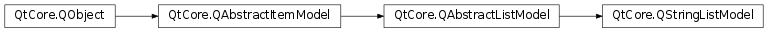

QStringListModel¶
Inherited by: QHelpIndexModel
Synopsis¶
Functions¶
- def
setStringList(strings) - def
stringList()
Detailed Description¶
The
PySide2.QtCore.QStringListModelclass provides a model that supplies strings to views.
PySide2.QtCore.QStringListModelis an editable model that can be used for simple cases where you need to display a number of strings in a view widget, such as aPySide2.QtWidgets.QListViewor aPySide2.QtWidgets.QComboBox.The model provides all the standard functions of an editable model, representing the data in the string list as a model with one column and a number of rows equal to the number of items in the list.
Model indexes corresponding to items are obtained with the
PySide2.QtCore.QAbstractListModel.index()function, and item flags are obtained withPySide2.QtCore.QStringListModel.flags(). Item data is read with thePySide2.QtCore.QStringListModel.data()function and written withPySide2.QtCore.QStringListModel.setData(). The number of rows (and number of items in the string list) can be found with thePySide2.QtCore.QStringListModel.rowCount()function.The model can be constructed with an existing string list, or strings can be set later with the
PySide2.QtCore.QStringListModel.setStringList()convenience function. Strings can also be inserted in the usual way with thePySide2.QtCore.QStringListModel.insertRows()function, and removed withPySide2.QtCore.QStringListModel.removeRows(). The contents of the string list can be retrieved with thePySide2.QtCore.QStringListModel.stringList()convenience function.An example usage of
PySide2.QtCore.QStringListModel:model = QStringListModel() list = QStringList() list.append("a") list.append("b") list.append("c") model.setStringList(list)
-
class
PySide2.QtCore.QStringListModel([parent=nullptr])¶ -
class
PySide2.QtCore.QStringListModel(strings[, parent=nullptr]) Parameters: - strings – list of strings
- parent –
PySide2.QtCore.QObject
Constructs a string list model with the given
parent.Constructs a string list model containing the specified
stringswith the givenparent.
-
PySide2.QtCore.QStringListModel.setStringList(strings)¶ Parameters: strings – list of strings Sets the model’s internal string list to
strings. The model will notify any attached views that its underlying data has changed.
-
PySide2.QtCore.QStringListModel.stringList()¶ Return type: list of strings Returns the string list used by the model to store data.
© 2018 The Qt Company Ltd. Documentation contributions included herein are the copyrights of their respective owners. The documentation provided herein is licensed under the terms of the GNU Free Documentation License version 1.3 as published by the Free Software Foundation. Qt and respective logos are trademarks of The Qt Company Ltd. in Finland and/or other countries worldwide. All other trademarks are property of their respective owners.